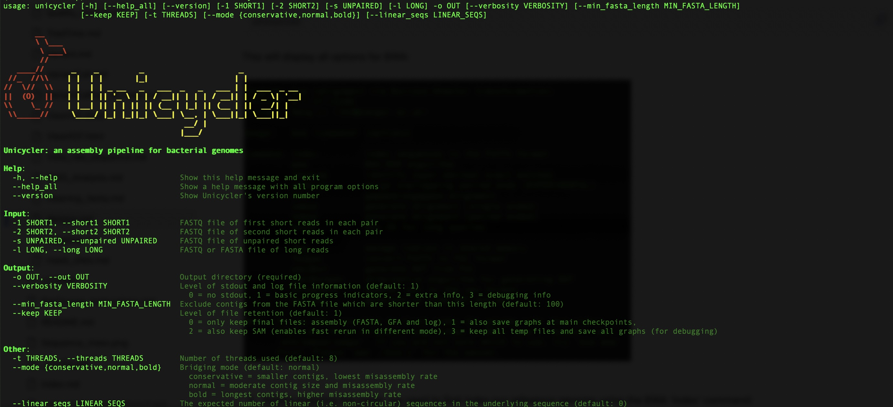
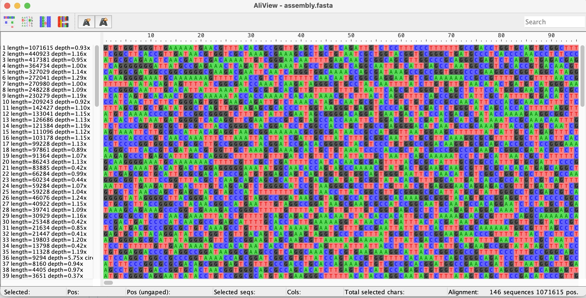
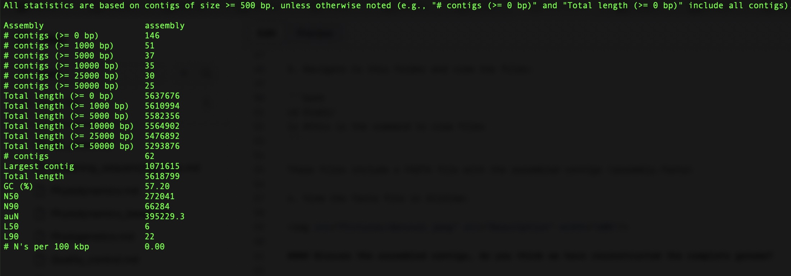

De novo (reference-free) assembly
De novo assembly is the process of reconstructing genomes from sequencing read data without the use of a reference genome. It involves overlapping and merging reads to form longer contiguous sequences (contigs) that represent the genomic sequence.
This process is useful when no suitable reference genome is available or when the goal is to discover novel genomic features, such as structural variations, insertions, or new genes. It is also valuable for assembling organisms with high levels of recombination, as it allows reconstruction of unique genome arrangements without bias from a reference.
The goal is to assemble the read data into a single consensus sequence, though this is rarely achieved with short-read data and you will likely have multiple contigs. Long-read sequencing data is much more likely to
We will use a de novo assembly software called Unicycler. This program uses an assembly software called SPAdes to assemble the sequencing reads into contigs, polishes the assemblies to improve the accuracy, and where possible, will circularize genomes.
For this activity, we will use the following files found in your /data/ folder:
- Kleb1_R1.fastq.gz and Kleb1_R2.fastq.gz – Paired-end 150bp sequence data from Klebsiella pneumoniae, collected in Taiwan. These have been inspected and cleaned already.
- First we can view the options in Unicycler by simply typing the following command in your terminal:
unicycler
This will display all options for Unicycler:

- We can then run the main command for Unicycler. This may take a little while to complete as it will test different k-mer lengths (see Lecture 1 for k-mer definition) to produce the optimal assembly. Perhaps run this command over the lunch break:
unicycler -1 Kleb1_R1.fastq.gz -2 Kleb1_R2.fastq.gz --keep 0 -t 2 -o Kleb1
Where the options specified are:
| Option | Description |
|---|---|
| -1 | The forward read of short-read paired end sequence data |
| -2 | The reverse read of short-read paired end sequence data |
| --keep | The file to keep in the output directory. 0 = only keep final files: assembly (FASTA, GFA and log), |
| -t | The number of threads to use. |
| -o | The name of the output directory |
We will now have the de novo assembled contigs using the optimal k-mer length that Unicycler determines using some quality metrics (outlined on the Unicycler Github). These will be contained in the /Kleb1/ folder.
- Navigate to this folder and view the files:
cd Kleb1/
ls #this is the command to view files
These files include a FASTA file with the assembled contigs (assembly.fasta)
- View the fasta file in AliView:

Discuss the assembled contigs, do you think we have reconstructed the complete genome?
Instead of inspecting the files manually, we can use software such as [QUAST}(https://github.com/ablab/quast) to calculate different metrics to assess our assemblies.
- Run QUAST with the following command to calculate assembly metrics and output the new files to a folder called QUAST/:
quast -o QUAST assembly.fasta
This will produce files in multiple formats that show the assembly metrics in the Kleb1/QUAST/ folder. We will view the 'report.txt; file.
- Either open the report.txt file in your text editor, or view it in Terminal or WSL using the following command:
cd QUAST/
vi report.txt
The report.txt file look like this:

Please discuss the output - 1. How many contigs do we have? 2. Given that the Klebsiella pneumoniae genome is ~5.5MB, do we think we have reconstructed the full genome?
Some of the metrics are not as intuitive (e.g., N50, L50). We may not have time to discuss but these are important to determine the contiguity of the assembly. Please read here for more details.